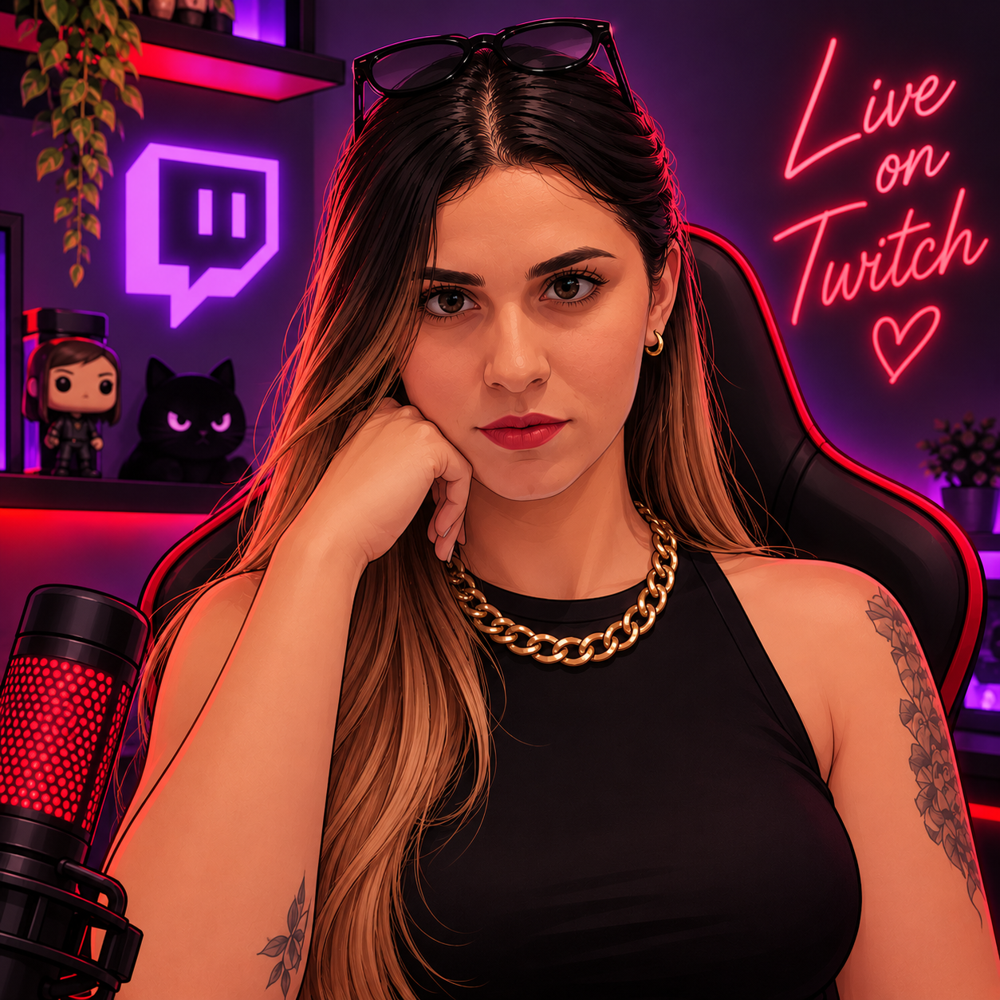

[aphrodite]
Live na TwitchJogando Valorant ao vivo, com ranked, clutches e muita resenha. Entra na live e vem jogar comigo!
O player da Twitch aparecerá aqui.
Meu setup e mira
- Sensibilidade
- 0.23
- DPI
- 3000
- Resolução
- 1920x1080
0;P;h;0;f;0;0l;4;0o;2;0a;1;0f;0;1b;0
Agenda de lives
- Segunda, quarta e sexta20h às 00h
- Sábado15h às 20h
- DomingoFolga